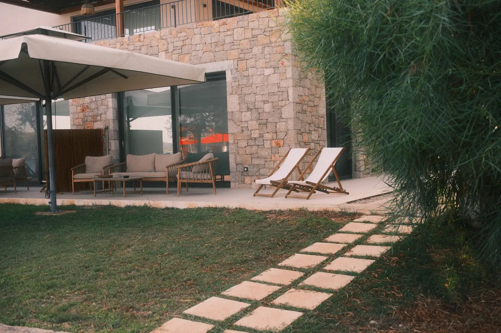
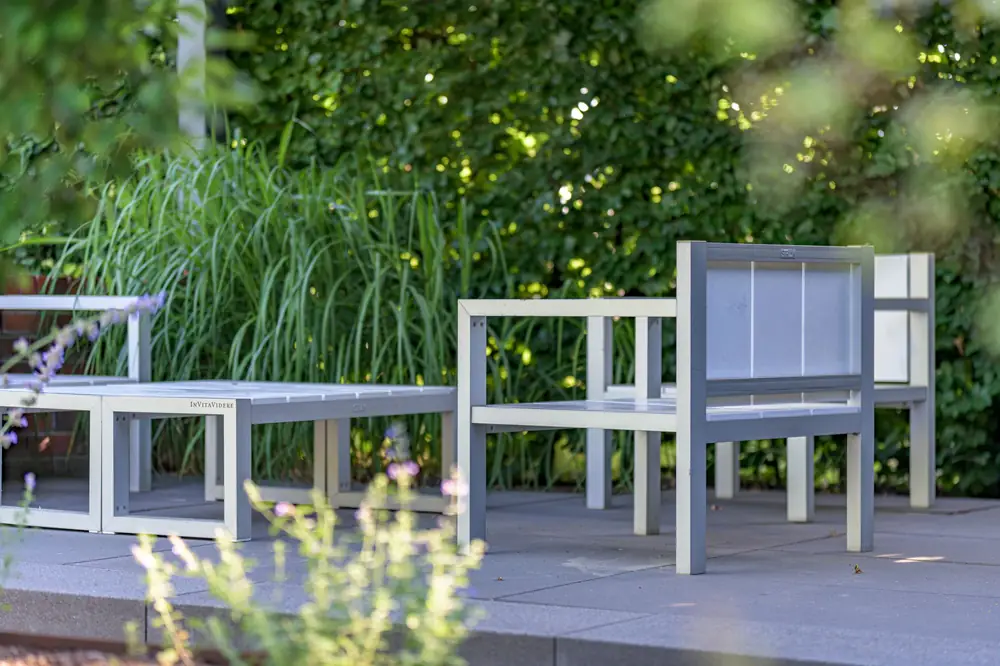
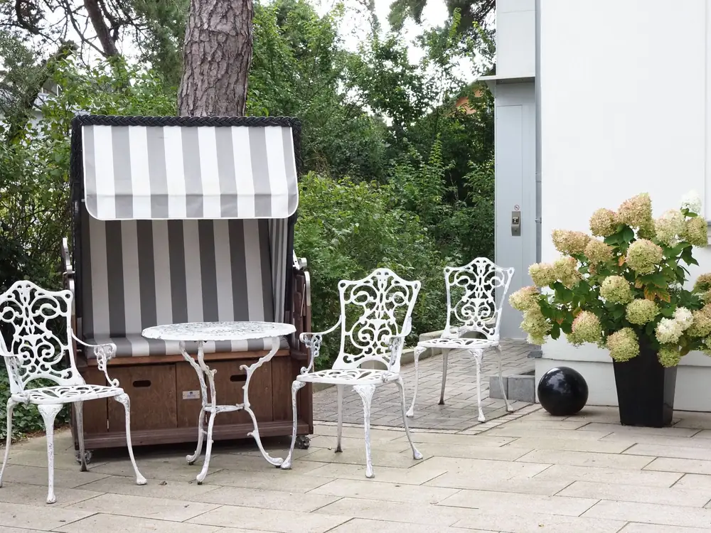
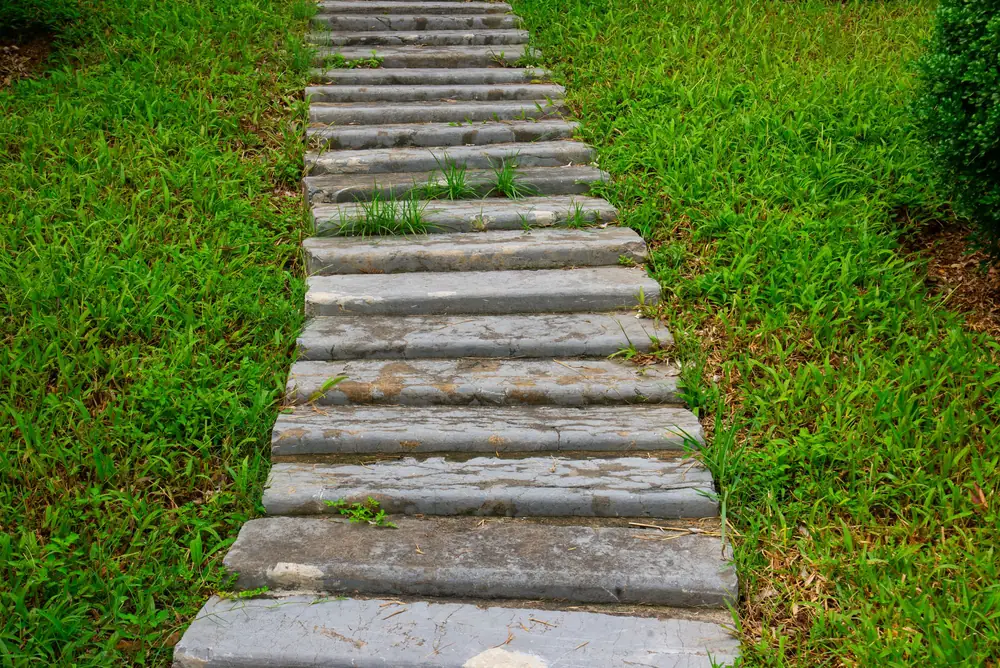

Terrassenbau in Wiesbaden, wenn die Tür höher liegt als der Garten.
Bei vielen Häusern am Taunushang liegt die Terrassentür ein ganzes Stück über dem Rasen. Beim Terrassenbau in Wiesbaden geht es deshalb fast immer zuerst um die Höhe. Wir bauen die Fläche in der richtigen Höhe, aus Naturstein, Feinsteinzeug oder Holz.
Preise pro Quadratmeter.
Richtwerte inkl. 19 % MwSt., Material und Arbeit. Am Hang kommen Stützmauer oder Stufen dazu, die wir getrennt ausweisen.
- Natursteinplatten150 bis 280 € pro m²
- Feinsteinzeug auf Stelzlagern140 bis 240 € pro m²
- Holz- oder WPC-Terrasse150 bis 260 € pro m²
- Blockstufen aus Granitauf Anfrage, je nach Höhe
Am Hang anders als am Rhein.
Am Taunusrand liegen viele Gärten am Hang, in Biebrich und Schierstein eher flach am Rhein. Beides verlangt jeweils eine eigene Bauweise.
Höhe zur Terrassentür
Wenn die Tür einen halben Meter über dem Garten liegt, bauen wir eine aufgeständerte Terrasse oder eine kleine Stützmauer mit Stufen, damit Sie ohne Stolperkante hinaustreten.
Stelzlager statt Betonbett
Feinsteinzeug und große Natursteinplatten verlegen wir gern auf Stelzlagern. Wasser läuft darunter ab, und Leitungen für Licht und Steckdosen bleiben zugänglich.
Licht gleich mitplanen
Leerrohre für Stufen- und Wegleuchten verlegen wir beim Bau gleich mit. Später nachzurüsten heißt oft, Platten wieder aufzunehmen.
Zur Terrasse gehören meist Stufen.
Eine Terrasse ist selten nur eine Fläche: Dazu gehören Stufen in den Garten und oft ein zweiter, kleiner Sitzplatz. Wir planen alles in einem Zug.



Typische Terrassen am Hang und in der Ebene.
Vier Terrassen, wie wir sie in Wiesbaden oft bauen.
- Wiesbaden-Dotzheim
Terrasse am Hang
Natursteinterrasse mit Stützmauer und drei Blockstufen in den Garten.
- Wiesbaden-Schierstein
Holzterrasse
Terrasse aus Lärche, Unterkonstruktion auf Punktfundamenten.
- Wiesbaden-Medenbach
Feinsteinzeug auf Stelzlagern
Große Platten, ebenerdig zur Tür, mit Rinne vor der Fassade.
- Wiesbaden-Auringen
Alte Terrasse erneuern
Waschbetonplatten raus, Natursteinplatten rein, Unterbau neu.
Von der Türschwelle aus geplant.
Wir planen jede Terrasse von der Höhe der Terrassentür aus. Daraus ergeben sich Unterbau, Stufen und Gefälle.
- Höhe und Größe
Sie schicken ein Foto von Tür und Garten und die gewünschte Größe.
- Material wählen
Naturstein, Feinsteinzeug oder Holz. Muster bringen wir auf Wunsch zum Termin mit.
- Unterbau oder Stelzlager
Je nach Höhe ein verdichteter Unterbau, Stelzlager oder eine Unterkonstruktion aus Holz.
- Belag, Stufen, Licht
Belag verlegen, Stufen setzen, Leuchten anschließen, dann die gemeinsame Abnahme.
Bevor Sie eine Terrasse bauen lassen.
Was kostet eine Terrasse in Wiesbaden?
Bei uns meist 150 bis 280 Euro pro Quadratmeter für Natursteinplatten und 140 bis 240 Euro für Feinsteinzeug auf Stelzlagern, jeweils mit Unterbau und Verlegung. Stufen oder eine Stützmauer am Hang berechnen wir gesondert. Den Unterbau passen wir an Boden und Höhe an.
Was ist besser: Naturstein, Feinsteinzeug oder Holz?
Das hängt vor allem davon ab, wie viel Pflege Sie wollen. Auf Feinsteinzeug lässt sich sogar Rotwein einfach abwischen. Naturstein bekommt mit den Jahren Patina, das muss man mögen. Holz ist barfuß am angenehmsten, will aber regelmäßig gepflegt werden. Für Terrassen mit viel Sonne raten wir eher zu hellen Steinen, weil dunkle Platten im Sommer sehr heiß werden. Muster bringen wir auf Wunsch zum Vor-Ort-Termin mit.
Brauche ich für eine Terrasse eine Genehmigung?
Eine ebenerdige Terrasse ist in der Regel genehmigungsfrei. Bei hohen Stützmauern, Überdachungen oder wenn der Bebauungsplan besondere Vorgaben macht, kann das anders sein. Das klären wir vor dem Angebot mit Ihnen. Bei einer erhöhten Terrasse nahe der Grundstücksgrenze sprechen wir auch über den Abstand zum Nachbarn.
Was passiert mit der alten Terrasse?
Alte Platten oder Holzdielen nehmen wir auf und entsorgen sie. Die Entsorgung weisen wir im Angebot gesondert aus, damit Sie sehen, was sie kostet. Ist der alte Unterbau noch tragfähig, kann er manchmal bleiben. Das prüfen wir beim Vor-Ort-Termin, bevor wir den Preis festlegen.
Wie lange dauert der Bau?
Eine Terrasse mit 20 bis 40 Quadratmetern dauert meist ein bis zwei Wochen. Am Hang mit Mauer und Stufen etwas länger. Wir sagen Ihnen vorher, an welchen Tagen Maschinen und Lieferungen kommen und wann die Terrassentür nicht nutzbar ist.
Weitere Leistungen und Orte
Fangen wir an der Terrassentür an.
Schicken Sie uns ein Foto von der Terrassentür und dem Garten davor. Daran sehen wir schon viel: Höhe, Gefälle und wie viel Platz für Stufen bleibt.